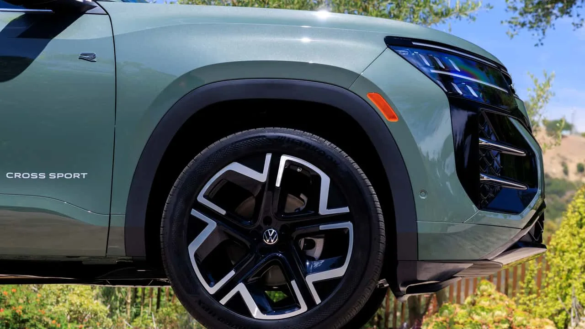
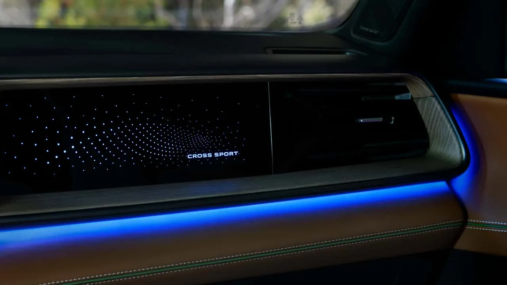
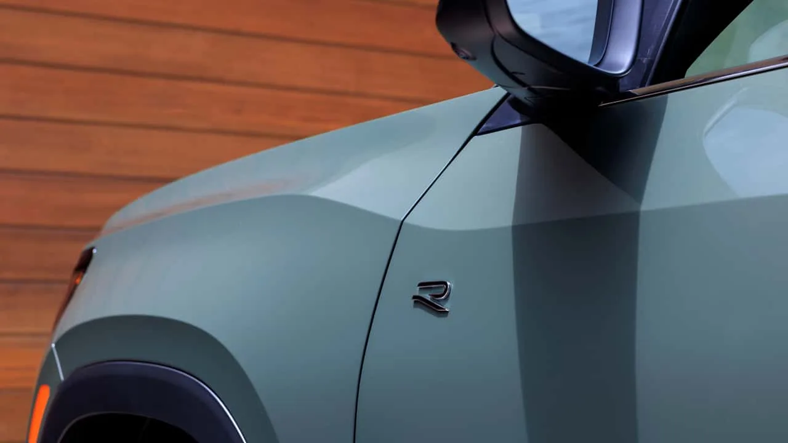

▲ 2027 폭스바겐 아틀라스 크로스 스포츠. 완전변경을 거치며 3열 시트를 없애고 5인승 전용 모델로 재편됐다
폭스바겐이 2세대 아틀라스를 기반으로 한 신형 아틀라스 크로스 스포츠를 공개했습니다. 가장 파격적인 변화는 좌석 구성입니다. 기존 7인승이었던 이 모델에서 3열 시트를 완전히 들어내고, 처음부터 5인승 전용으로 설계를 다시 했습니다. 대신 2열 공간과 적재 공간을 넉넉하게 확보해, "가족용 SUV보다 디자인과 주행 감각을 우선하는 수요"를 정조준했다는 것이 폭스바겐 측 설명입니다.
1. 애매한 3열보다 확실한 5인승
사실 아틀라스 크로스 스포츠의 3열은 성인이 타기엔 좁고, 접으면 적재공간만 애매하게 줄어드는 '있으나 마나 한 좌석'이라는 평가를 오랫동안 받아왔습니다. 폭스바겐은 이번 완전변경에서 이 딜레마를 정면 돌파하는 대신, 아예 3열을 포기하는 쪽을 택했습니다. 대신 루프를 낮추고 뒤 오버행을 줄여 쿠페형 SUV 특유의 역동적인 실루엣을 강조했습니다. 어중간한 실용성 대신 확실한 개성을 택한 셈입니다.

▲ 새로운 대형 휠과 프론트 펜더 디테일. 전고를 53mm 낮추고 전장을 137mm 줄이며 한층 다부진 자세를 갖췄다
2. 숫자로 보는 체형 변화
신형의 전장은 195.6인치로, 3열을 갖춘 기존 아틀라스보다 137mm(5.4인치) 짧아졌습니다. 전고 역시 53mm(2.1인치) 낮아지면서, 뒤로 갈수록 급격히 떨어지는 루프라인이 완성됐습니다. 전면부에는 이중으로 쌓인 LED 헤드램프와 상단이 가려진 그릴, 볼륨감 있는 후드가 더해져 이전 세대보다 훨씬 고급스러운 인상을 풍깁니다. 차체 자체가 작아진 만큼, 대형 패밀리카보다는 개성 있는 도심형 SUV에 가까운 포지션으로 이동한 셈입니다.
| 항목 | 크로스 스포츠(신형) | 3열 아틀라스 |
|---|---|---|
| 좌석 구성 | 5인승 전용 | 7인승 |
| 전장 | 195.6인치 | 137mm 더 김 |
| 전고 | 53mm 낮음 | 기준 |
| 루프라인 | 쿠페형 슬로프 | 박스형 |

▲ 새로워진 실내 대시보드와 앰비언트 라이트. 대형 스크린과 마사지 시트 옵션 등 프리미엄 사양이 대거 추가됐다
3. 실내는 오히려 더 고급스러워졌다
좌석 수는 줄었지만 편의사양은 오히려 늘었습니다. 완전히 새로 디자인된 실내에는 마사지 기능을 갖춘 시트가 옵션으로 제공되고, 더 커진 디스플레이와 개선된 운전자 보조 시스템, 스스로 주차까지 돕는 '파크 어시스트 플러스'가 새로 추가됐습니다. 파워트레인은 기존보다 출력이 상향된 2.0리터 터보 엔진을 기반으로 하는 것으로 알려졌으며, 세부 출력 수치는 아직 공개되지 않았습니다.

▲ 사이드미러 하단의 'R' 배지 디테일. 고성능 지향 트림의 존재를 암시하는 요소다
4. 정리 — 미국 시장, 2027년 초 출시
정확한 가격과 세부 트림 구성은 출시를 앞두고 추후 공개될 예정이며, 미국 시장 기준 2027년 초 판매가 시작될 것으로 알려졌습니다. 채터누가 공장에서 생산되는 미국 전용 모델인 만큼, 국내 출시 계획은 확인되지 않았습니다. 3열을 포기하는 대신 확실한 디자인과 프리미엄 사양으로 승부하겠다는 폭스바겐의 판단이 시장에서 통할지, 출시 이후 반응을 지켜볼 필요가 있습니다.